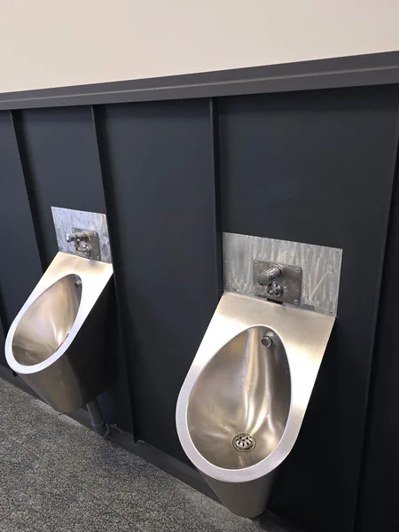
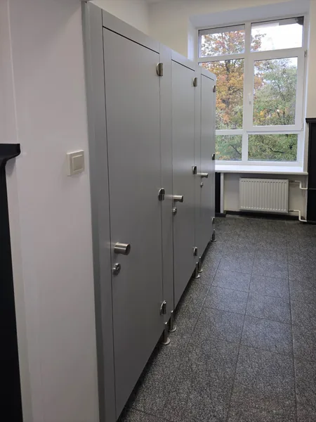
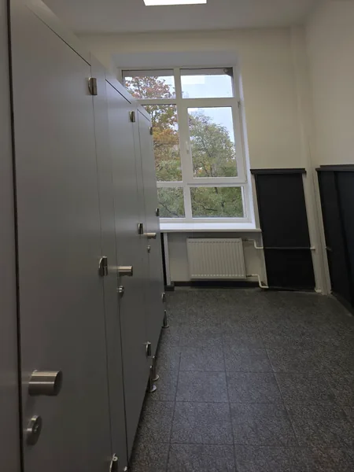
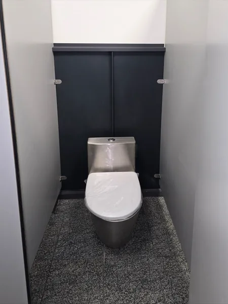
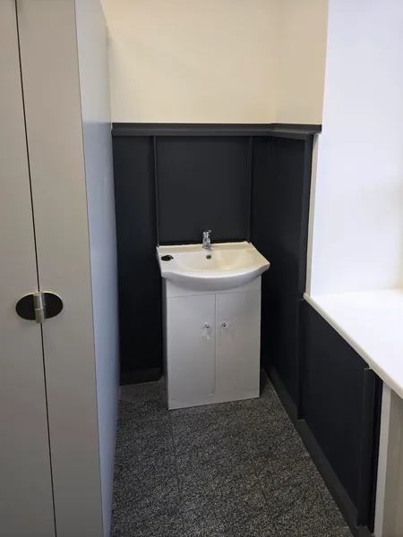
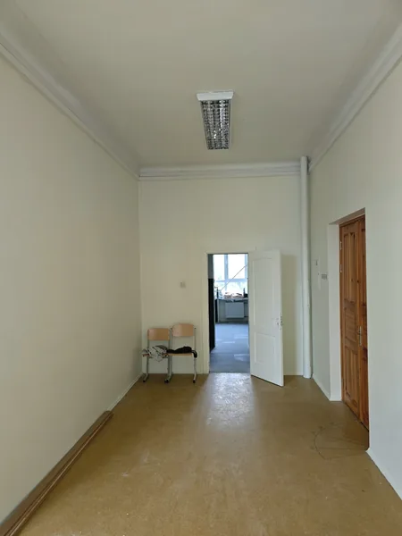

Profesionālisms un kvalitatīvs rezultāts
Visi būvdarbi: no pamatiem līdz jumtam
Kā arī iekšējā apdare. Strādājam sabiedriskās ēkās, piemēram, skolās, un privātmājās.

Uzņēmuma dati
- Uzņēmums
- SIA „Eksperts D”
- Darbi
- Būvdarbi un iekšējā apdare
- Būvkomersantu reģ. Nr.
- 17322
- Darbojamies
- kopš 2022. gada
- Objekti
- Latvijā
01 · Foto no objektiem
Mūsu darbi
Fotogrāfijas no mūsu objektiem, galvenokārt no skolas: gaitenis, sanitārie mezgli, telpas, jumts un fasāde. Strādājam sabiedriskās ēkās, piemēram, skolās, un privātmājās. Katru fotogrāfiju var atvērt lielākā izmērā.

Sanitārais mezgls: flīzes, duša, santehnika 
Skolas gaitenis: sienas, griesti, logu ailes 
Jumts: metāla segums, fasāde pirms apdares


Fasāde: logi un stiklotas durvis, vēja izolācija 
Zēnu tualete skolā: pisuāri, sienu paneļi 
Skolas sanitārais mezgls: kabīņu starpsienas, flīzēta grīda



Skolas sanitārais mezgls: kabīnes, sienu paneļi, radiators zem loga 
Tualetes kabīne: sienu paneļi, nerūsējošā tērauda tualetes pods 
Izlietne ar skapīti un sienu paneļi 
Skolas telpa pēc remonta: sienas, griesti, durvis


02 · Pakalpojumi
Ko darām
Visi būvdarbi no pamatiem līdz jumtam un iekšējā apdare, sabiedriskās ēkās un privātmājās. Fotogrāfijas no objektiem ir sadaļā „Mūsu darbi”.
Vajadzīgā darba sarakstā nav? Piezvaniet un pajautājiet.
Būvdarbi no pamatiem līdz jumtam
Visi būvdarbu veidi: pamati, sienas, jumti.
Iekšējā apdare
Sienu un griestu apdare, grīdas, krāsošana, flīzēšana.
Sanitārie mezgli
Tualetes un dušas telpas: flīzes, kabīņu starpsienas, sienu paneļi, santehnikas montāža, arī nerūsējošā tērauda.
Ēku remonts
Sabiedrisko ēku, piemēram, skolu, un privātmāju remonts. Logu un durvju nomaiņa kā daļa no remonta.
03 · Process
Kā strādājam
Solis 01
Zvans vai e-pasts
Pastāstiet, kas jāizdara un kur. Objekta fotogrāfijas vai projekts e-pastā palīdz saprast darbu apjomu.
Solis 02
Apjoms un termiņi
Vienojamies par darbiem, materiāliem un laiku, kad sākt.
Solis 03
Darbi objektā
Strādājam pēc saskaņotā plāna un uzreiz sakām, ja objektā atklājas kaut kas jauns.
Solis 04
Nodošana
Kopā apskatām paveikto, un jūs saņemat gatavu objektu.
04 · Uzņēmums
Reģistrēts būvkomersants
SIA „Eksperts D” ir reģistrēta Būvkomersantu reģistrā. Datus var pārbaudīt Būvniecības informācijas sistēmā bis.gov.lv un Uzņēmumu reģistrā.
- Būvkomersantu reģistrā
- kopš 19.05.2022, Nr. 17322
- Pamatdarbība (NACE)
- 41.00 Dzīvojamo un nedzīvojamo ēku būvniecība
- Reģistrācijas Nr.
- 40203396894, kopš 29.04.2022
- PVN maksātāja Nr.
- LV40203396894
- Juridiskā adrese
- Centra iela 3B-18, Sondori-Škeņeva, Vērēmu pag., Rēzeknes nov., LV-4647
05 · Jautājumi
Bieži jautājumi
Ko sagatavot pirmajai sarunai?
Objekta adresi, īsu aprakstu, kas jāizdara, fotogrāfijas vai projektu un, ja zināt, aptuvenos apjomus un vēlamo darbu sākumu.
Cik maksā darbi?
Cena ir atkarīga no darbu apjoma un materiāliem. Pastāstiet par objektu, un sagatavosim piedāvājumu.
Vai esat reģistrēts būvkomersants?
Jā. SIA „Eksperts D” ir Būvkomersantu reģistrā kopš 19.05.2022, reģistrācijas Nr. 17322. To var pārbaudīt bis.gov.lv.
Vai strādājat sabiedriskās ēkās?
Jā, piemēram, skolā: gaiteņi, klases, sporta zāle, sanitārie mezgli un jumts. Strādājam arī privātmājās.
Vai izrakstāt rēķinu ar PVN?
Jā, esam PVN maksātāji, Nr. LV40203396894.
06 · Kontakti
Pastāstiet, kas jāizdara
Piezvaniet vai uzrakstiet: kādi darbi vajadzīgi, kur atrodas objekts un kad vēlaties sākt. Atbildēsim un vienosimies par nākamo soli.
Tālrunis+371 22 347 075
E-pastsekspertsd@inbox.lv
Ko uzrakstīt e-pastā
- objekta adresi
- kādi darbi vajadzīgi
- objekta fotogrāfijas vai projektu pielikumā
Rekvizīti
SIA „Eksperts D”
Reģ. Nr. 40203396894
PVN Nr. LV40203396894
Centra iela 3B-18, Sondori-Škeņeva,
Vērēmu pag., Rēzeknes nov., LV-4647